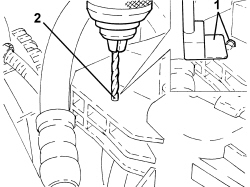
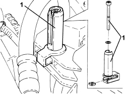

1088B36 <x>UPPER PIN SUPPORTING ENGINE COOLING RADIATOR (ONE), LH OR RH - R&R</x>
- Path
- Procedures > 10 ENGINE > 1088 ENGINE COOLING > 1088B ENGINE COOLING RADIATOR > 1088B36 <x>UPPER PIN SUPPORTING ENGINE COOLING RADIATOR (ONE), LH OR RH - R&R</x>
- Kind
- repair procedure (removal / refitting; the operation number is the code)
- Applies to
- engines: 2.2, 1.9 JTD 8v, 1.9 JTD 16v, 2.4 JTD 20v; all production periods
- Interactive page
- https://sloeber94.github.io/elrnDB-fCrm/en/#/194004714
Applies to: engines: 2.2, 1.9 JTD 8v, 1.9 JTD 16v, 2.4 JTD 20v; all production periods
 Removing
Removing
 Refitting
RefittingOp. 7055B54 UNDER ENGINE PROTECTION/GUARD - R.R.
Op. 1088B29 ENGINE COOLING RADIATOR SUPPORT (1), LH OR RH - R R
Applies to: engines: 2.2, 1.9 JTD 8v, 1.9 JTD 16v, 2.4 JTD 20v; all production periods
Refitting
Removing1. Remove the residues of the pin from the attachment area.
2. Make a 4 mm opening at the point shown in the diagram.

Applies to: engines: 2.2, 1.9 JTD 8v, 1.9 JTD 16v, 2.4 JTD 20v; all production periods
1. Place the new engine cooling radiator upper support pin in its housing.

Applies to: engines: 2.2, 1.9 JTD 8v, 1.9 JTD 16v, 2.4 JTD 20v; all production periods
Op. 1088B29 ENGINE COOLING RADIATOR SUPPORT (1), LH OR RH - R R